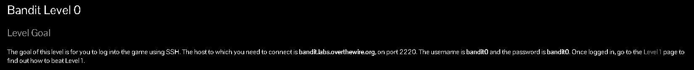
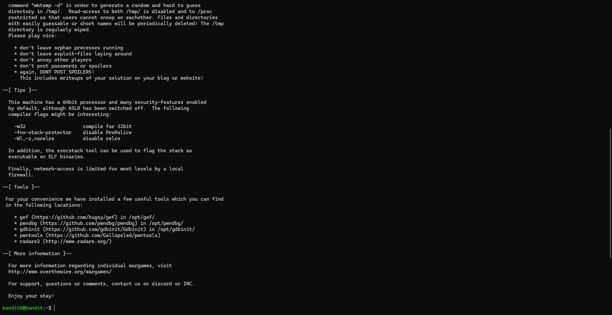
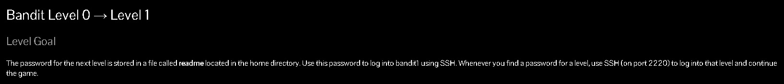
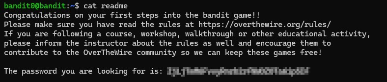
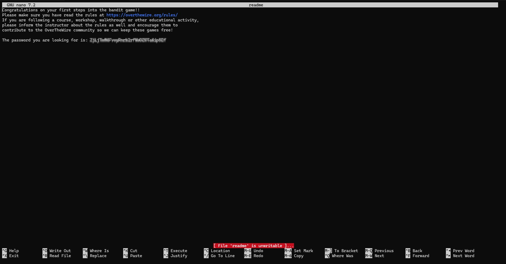
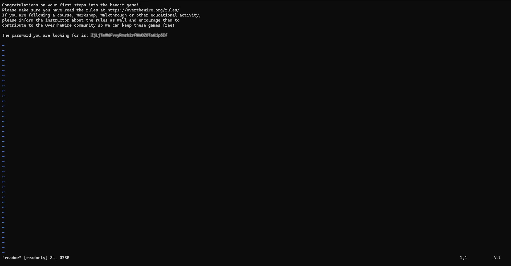

A practical notes hub for ethical hacking fundamentals, beginner-friendly lab references, and reusable Bandit walkthroughs that are easier to revisit than scattered bookmarks.
Featured guide
Use this page as a repeatable study reference
This page is built for repeat use while learning. It keeps the framing, key commands, and starter OverTheWire progress in one place so you can review concepts quickly before the details fade.
Current coverage
What this page covers
Ethical hacking context and beginner-friendly caution notes
Bandit introduction plus the first two starter walkthroughs
Command examples, screenshots, and copy-ready snippets
How to Use These Notes
Disclaimer: These notes are for legal, educational use only. Practice only on systems you own or have explicit permission to test.
This page is not meant to replace a full course. It is a practical reference for beginners who want a clearer path through early penetration testing concepts, commands, and lab steps.
A good starting point is Linux familiarity, especially navigating the terminal with confidence. Kali Linux is useful for exploration, but the real goal is understanding the tools rather than just launching them.
Use the sidebar to jump between concepts, keep notes on passwords or flags locally, and revisit each section after trying the exercise yourself.
Ethical Hacking Basics
Hacking in this context means understanding how systems fail, where trust breaks down, and how attackers might misuse that weakness. In ethical hacking, that knowledge is used to improve security rather than abuse it.
Common hacker categories
People often group hackers into three broad categories. The simplest difference between them is not skill level, but intent, permission, and accountability.
A quick comparison table makes that difference easier to remember:
Type
Description
Typical Motivation
Reference
White-Hat Hackers
Ethical security professionals who work with permission to find, validate, and report vulnerabilities so defenses can be improved.
Improve security for organizations, products, and users.
Operators who may access systems without authorization but claim they are exposing weaknesses rather than causing direct harm. Their actions can still be illegal.
Curiosity, disclosure, recognition, or occasional financial gain.
Bandit is a beginner-friendly wargame from OverTheWire. Like other capture-the-flag style challenges, you solve each level and use the discovered password to move forward. It is one of the best entry points for learning how Linux commands, files, and basic access workflows fit together. Visit the Bandit page for the official level list and rules.
Bandit Introduction
Level 0: Initial Login
Level 0 is the first login step. The goal is simply to connect to the host with SSH, which is the secure remote-access method used throughout the game.

Bandit0 Goals
From the challenge prompt, we can extract the key connection details below:
Host: bandit.labs.overthewire.org
Port: 2220
Username: bandit0
Password: bandit0
Because the host, port, username, and password are already provided, the only task here is to log in correctly and confirm the session works.
ssh -p {port number} {user}@{host}
Combined with the given information, the final command becomes:
ssh -p 2220 bandit0@bandit.labs.overthewire.org
After you run the command, enter the password bandit0 when prompted. Once you reach the shell, you have completed Level 0 and are ready to start reading the system like a real beginner lab environment.

Level 0 Completed
Level 0 → Level 1: Reading Files Through SSH

Bandit1 Goals
From the level prompt, we can summarize the task like this:
The password is stored in a file named readme.
The readme file is in the home directory for the current level (bandit0).
That password will be used to log in to the next level.
Hint: the next username is bandit1.
Continuing from the previous level, the pwd command confirms where you are. It stands for Print Working Directory and helps you verify which folder you are currently working in.
bandit0@bandit:~$ pwd
/home/bandit0
The output shows that you are already in the correct home directory. Running ls then lists the files in that location so you can see what is available to inspect.
bandit0@bandit:~$ ls
readme
Once you know the readme file contains the next password, there are a few simple ways to view it. You can print the file directly in the terminal or open it with a text editor. Here are common beginner-friendly options:
Command
Short Description
Jump to walkthrough
Link to Manual
cat
Concatenate files and print on the standard output
'cat' prints file contents directly to the terminal, which makes it the fastest beginner-friendly way to read the readme file.

Bandit1 Complete
Walkthrough: nano
'nano' is a simple terminal text editor. It is helpful when you want to open a file in a more guided interface and read it line by line.
bandit0@bandit:~$ nano readme

Bandit1 Complete
Walkthrough: vi
'vi' is a classic terminal editor with more power and more shortcuts. It is useful to recognize, even if beginners often prefer nano first.
bandit0@bandit:~$ vi readme

Bandit1 Complete
Walkthrough: vim
'vim' is an improved version of vi with additional features. If you already know the basics, it is another valid way to open and read the file.
bandit0@bandit:~$ vim readme
Bandit1 Complete
After you retrieve the password, save it somewhere reliable. Keeping structured notes makes it much easier to resume later without repeating earlier levels or losing track of credentials.